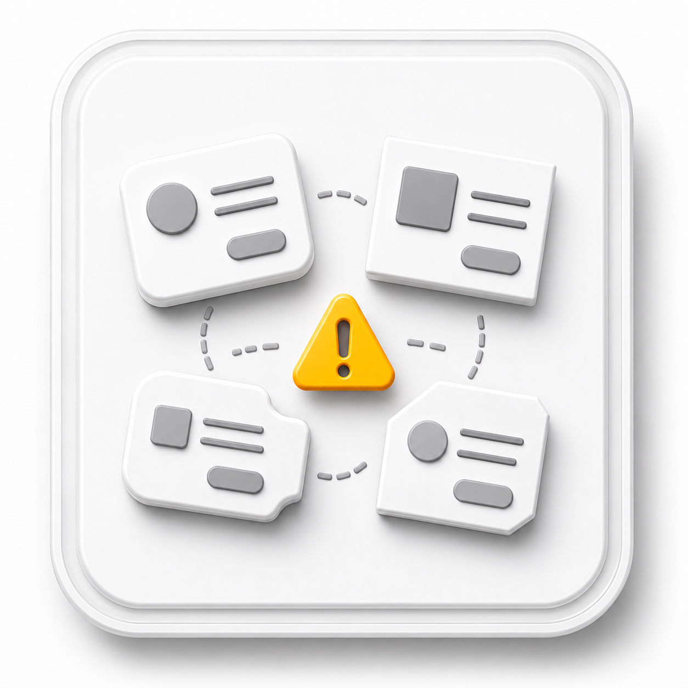
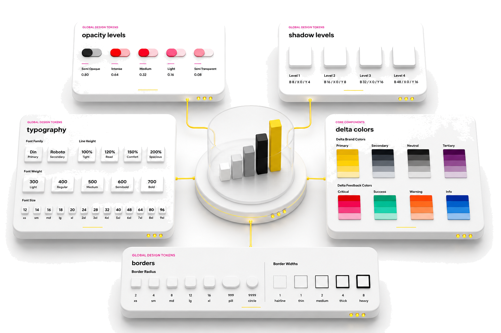
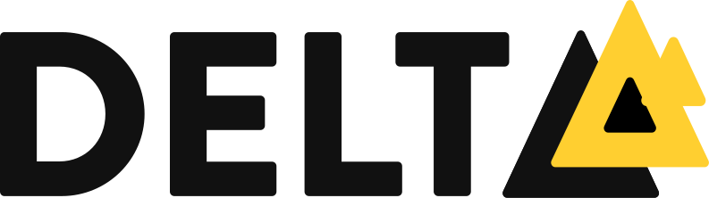
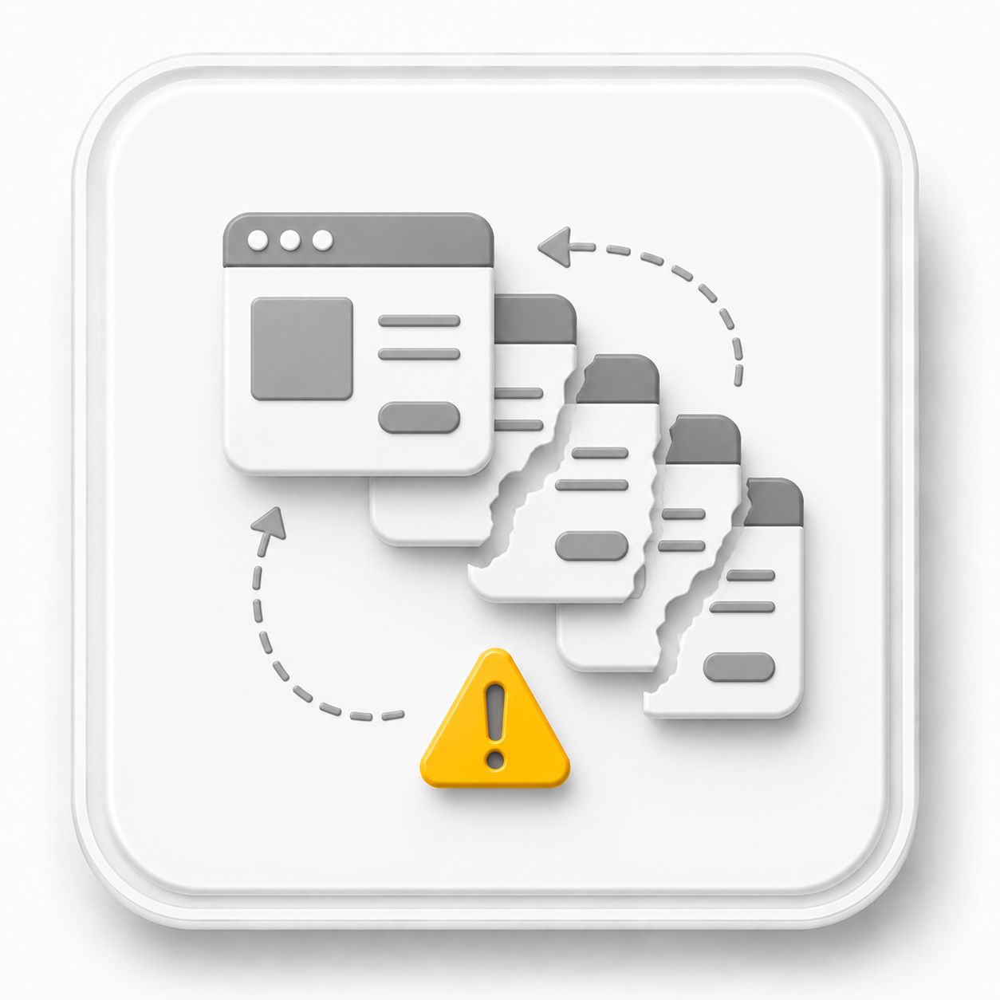
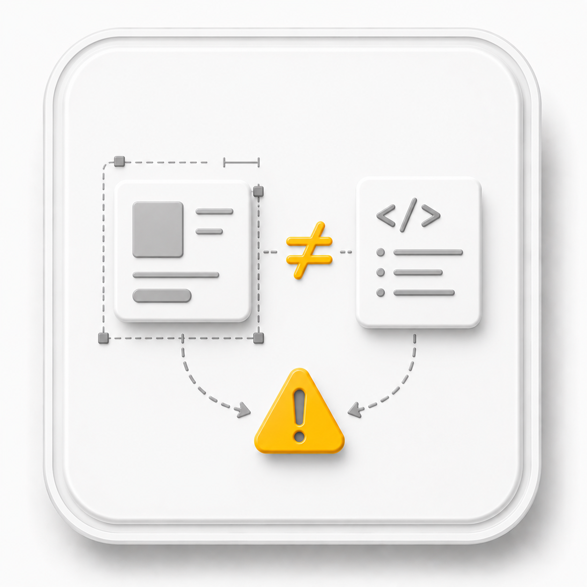
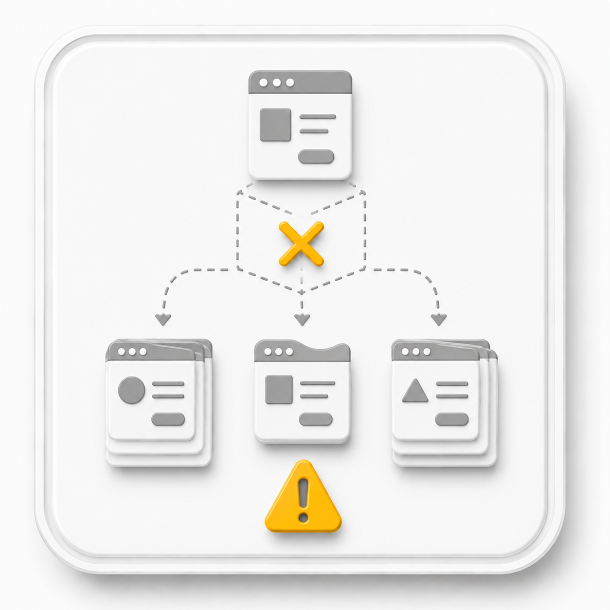

Fragmentação visual
Cada produto seguia padrões próprios, sem componentes compartilhados. Zero reuso entre equipes e marcas.


O design system como redutor de custo operacional, criado para unificar mais de 20 produtos digitais em três segmentos de negócio.
À medida que a Escale crescia, novas marcas e frentes de negócio surgiam em ritmos diferentes. Cada equipe decidia de forma independente, o que gerava inconsistências e retrabalho.
O desafio não era apenas criar componentes. Era estabelecer uma linguagem comum capaz de conectar pessoas, produtos e marcas em uma operação em expansão.
Foi nesse contexto que nasceu o Delta.
Liderei a construção do design system desde a fundação, definindo os ativos visuais, a estratégia, a governança e os processos que garantiriam sua adoção ao longo do tempo.
Antes de desenhar qualquer componente, era necessário compreender como os produtos eram construídos, onde estavam os pontos de atrito e quais decisões precisavam ser padronizadas. Mais do que um problema visual, era um problema de operação. Mapeamos então os principais desafios.

Cada produto seguia padrões próprios, sem componentes compartilhados. Zero reuso entre equipes e marcas.

Designers recriavam soluções já resolvidas a cada landing nova. Cada projeto recomeçava do zero, sem biblioteca de consulta.

A ambiguidade entre design e código gerava idas e vindas. Cada dev interpretava o layout à sua maneira, sem documentação.

Novos produtos herdavam inconsistências em vez de padrões. A dívida visual crescia mais rápido que a empresa, com 3× mais marcas no roadmap.
A estratégia partiu de uma arquitetura white label: múltiplas marcas compartilham a mesma fundação enquanto preservam suas identidades próprias.
Uma separação clara entre regras estruturais e características visuais, flexível o suficiente para evoluir junto com a empresa.
Uma fundação. Muitas marcas.
Separar o que é estrutura do que é aparência, para que o sistema cresça sem se repetir.
A construção do Delta aconteceu em diferentes camadas, cada uma responsável por sustentar a próxima.
Estruturei os fundamentos visuais que serviriam de base para todo o ecossistema de produtos, transformando decisões visuais em regras compartilhadas e escaláveis.
Ferramenta criada para validar relações entre cores, orientar decisões de interface e incorporar acessibilidade à fundação do Design System desde a definição dos tokens.
Com a fundação estabelecida, desenvolvi a biblioteca que passou a servir como referência para designers e desenvolvedores. O foco não era apenas reutilizar elementos, mas construir padrões consistentes capazes de acelerar entregas sem comprometer a experiência.
Versões em produção, desktop e mobile.
Componentes únicos, cada um com estados e variantes completos.
Depreciados na jornada. Poda ativa, sinal de um DS vivo.
Um dos principais diferenciais do Delta foi atender diferentes marcas a partir de uma única base. Combinando tokens e componentes compartilhados, adaptei rapidamente interfaces para telecomunicações, saúde e serviços financeiros, mantendo consistência estrutural e reduzindo custos de manutenção.
Paleta vibrante com destaque em amarelo. Tipografia robusta, densidade alta.
Paleta neutra com acentos em azul. Tipografia clara, espaçamento generoso.
Paleta premium com ouro e preto. Tipografia elegante, detalhes refinados.
A construção do sistema não terminava na biblioteca. Para garantir consistência ao longo do tempo, estruturei processos de governança que ajudaram o Delta a se tornar parte da cultura da organização.
Essas iniciativas permitiram que o sistema continuasse evoluindo de forma sustentável, mesmo diante do crescimento da empresa.
Com a fundação estabelecida, desenvolvi a biblioteca de componentes que passou a servir como referência para designers e desenvolvedores.
O foco não era apenas criar elementos reutilizáveis, mas construir padrões consistentes capazes de acelerar entregas sem comprometer a experiência.
A biblioteca contemplava componentes documentados, variantes, estados e comportamentos preparados para diferentes cenários de produto.
Um dos principais diferenciais do Delta foi sua capacidade de atender diferentes marcas a partir de uma única base.
Através da combinação entre tokens e componentes compartilhados, foi possível adaptar rapidamente interfaces para segmentos como telecomunicações, saúde e serviços financeiros, mantendo consistência estrutural e reduzindo custos de manutenção.
Um sistema que mudou como o time constrói produto: retrabalho reduzido, padrão visual coerente entre as 20+ marcas e handoff sem ambiguidade entre design e engenharia.
Redução no tempo de criação de novas interfaces.
Produtos consumindo a mesma biblioteca.
Cobertura completa, de átomos a templates.
Troca de marca via tokens, sem redesenho.
A biblioteca virou referência interna: novos squads chegavam e encontravam uma fundação pronta, não um canvas em branco. O reaproveitamento virou o default.

Disponível para projetos remotos